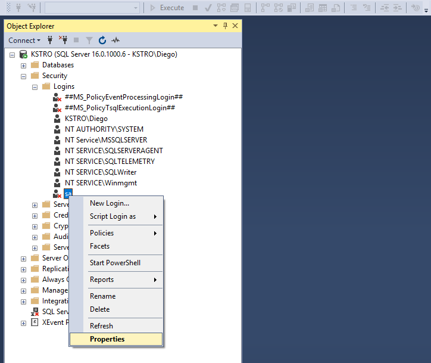
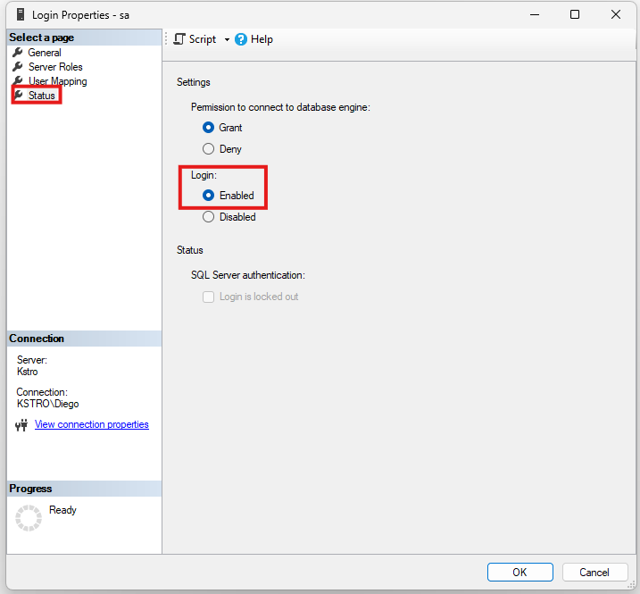
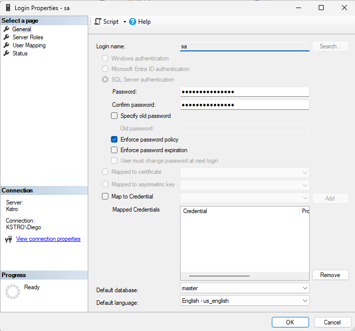
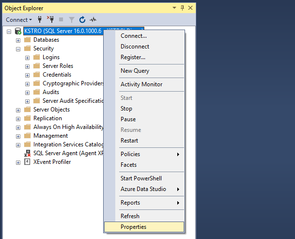
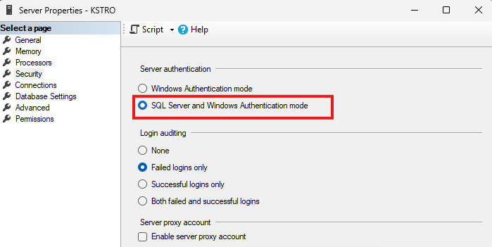
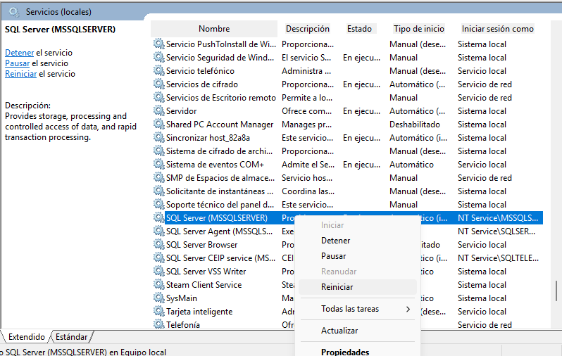
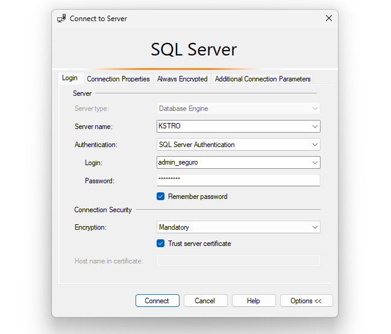

En la administración de bases de datos, una de las tareas fundamentales es gestionar los usuarios y controlar los permisos que poseen sobre los objetos del sistema. Una configuración adecuada garantiza la seguridad, la integridad de los datos y la correcta operación de las aplicaciones que acceden al sistema.
El objetivo principal es mostrar cómo diferentes roles y usuarios pueden crearse con funciones específicas, limitando su alcance para aplicar el principio de mínimo privilegio. De esta forma, cada cuenta tiene acceso solo a lo que realmente necesita, lo que reduce riesgos de errores y fortalece la seguridad.
Principio de mínimo privilegio
La seguridad por mínimo privilegio indica que un usuario o aplicación debe contar únicamente con los permisos necesarios para realizar sus tareas y nada más.
Esto disminuye riesgos de:
- Accesos no autorizados.
- Pérdida o corrupción de datos.
- Escalamiento indebido de privilegios.
Para nuestra practica crearemos dos perfiles con funciones bien diferenciadas:
- El usuario orange (perfil analítico): podrá solo leer datos dentro del esquema dbo. No tendrá capacidad de insertar, modificar o borrar.
- El usuario app_gym (perfil de aplicación): tendrá permisos de lectura, inserción y actualización en las tablas dbo.Cliente y dbo.Membresia, pero se le prohibirá explícitamente borrar registros y alterar el esquema.
El primer paso para la práctica es iniciar sesión en SQL Server Management Studio con un usuario que tenga permisos de administrador. En este caso utilizaremos el usuario sa (System Administrator), que es el administrador por defecto que viene en SQL Server.
Importante: En caso de no contar con el usuario sa, puedes iniciar sesión con Windows Authentication y dirigirte hacia abajo en esta misma página hasta la sección "Obligatorio" para continuar con la guía. Puedes realizar la práctica, pero podrías llegar a tener problemas por falta de permisos.
Opcional: Cómo activar el usuario sa si está deshabilitado
Si al intentar iniciar sesión con SQL Server Authentication utilizando el usuario sa recibes un error, es posible que el usuario esté deshabilitado. A continuación se detallan los pasos para activarlo desde SQL Server Management Studio:
- Inicia sesión con un usuario administrador usando Windows Authentication.
- Ve al panel izquierdo: Security → Logins → sa y haz clic derecho → Properties. 
-
En la pestaña Status, asegúrate de seleccionar:
- Permission to connect to database engine: Grant
- Login: Enabled

- Ve a la pestaña General y asigna una contraseña segura.
- Haz clic en OK para guardar los cambios. 
Opcional: Cómo activar el inicio de sesion por medio de SQL Server Authentication si está deshabilitado
Si al intentar iniciar sesión con el usuario "sa" da error es posible que al instalar SQL Server se haya dejado la autenticación de Windows únicamente. A continuación se detallan los pasos para activarlo desde SQL Server Management Studio:
- Conéctate a la instancia de SQL Server usando Windows Authentication con un usuario administrador.
- Haz clic derecho sobre el servidor en el Object Explorer → selecciona Properties. 
-
En la ventana de propiedades, ve a la pestaña
Security y selecciona la opción:
- SQL Server and Windows Authentication mode

- Haz clic en OK para guardar los cambios.
- Importante: Reinicia el servicio de SQL Server desde el Servicios de Windows para aplicar la nueva configuración. 
Opcional: Cambiar el nombre del login sa por seguridad
Por motivos de seguridad, puedes cambiar el nombre del login sa para hacerlo menos predecible y reducir riesgos de ataques por diccionario. Esto no afecta su funcionalidad administrativa, pero es una excelente práctica.
Ejecuta el siguiente comando en la hoja de consultas puedes colocar el nombre de usuario que desees en lugar de "admin_seguro" solo es importante que lo recuerdes:
-- Cambiar nombre del login sa a admin_seguro
ALTER LOGIN sa WITH NAME = admin_seguro;
-- Cambiando la clave del admin
ALTER LOGIN admin_seguro WITH PASSWORD = 'ClaveSegura$02';
Importante: Si cambias el nombre del login sa, asegúrate de recordar o anotar el nuevo nombre y la contraseña del usuario administrador, ya que los necesitarás para iniciar sesión.
Ahora podemos corroborar que el usuario "sa" ya no existe y en su lugar tenemos el nuevo usuario "admin_seguro" ejecutando el siguiente comdando:
-- Consultar todos los logins existentes
SELECT name, is_disabled
FROM sys.server_principals
WHERE type_desc = 'SQL_LOGIN';
Ahora que ya tenemos activado el usuario administrador, iniciamos sesión utilizando el modo de autenticación SQL Server Authentication y colocamos las credenciales que asignamos anteriormente:
Obligatorio: Crear la base de datos DB_Gimnasio con sus tablas e inserciones para continuar con la practica y posteriormente realizar los ejercicios guiados.
-- Crear la base de datos DB_Gimnasio si no existe
IF DB_ID(N'DB_Gimnasio') IS NULL
BEGIN
PRINT 'Creando base de datos DB_Gimnasio...';
CREATE DATABASE DB_Gimnasio;
END
GO
-- Crear tablas de la base de datos DB_Gimnasio
USE DB_Gimnasio;
-- Crear tabla Cliente
IF OBJECT_ID(N'dbo.Cliente', N'U') IS NULL
BEGIN
CREATE TABLE dbo.Cliente (
id INT IDENTITY(1,1) PRIMARY KEY,
nombre NVARCHAR(100) NOT NULL,
email NVARCHAR(100) NULL,
fecha_alta DATE NOT NULL DEFAULT (GETDATE())
);
INSERT INTO dbo.Cliente(nombre,email)
VALUES ('Ana Pérez','ana@fit.com'),('Luis Díaz','luis@fit.com'),('María López','maria@fit.com');
END
-- Crear tabla Membresia
IF OBJECT_ID(N'dbo.Membresia', N'U') IS NULL
BEGIN
CREATE TABLE dbo.Membresia (
id INT IDENTITY(1,1) PRIMARY KEY,
cliente_id INT NOT NULL,
plan_membresia NVARCHAR(40) NOT NULL,
fecha_inicio DATE NOT NULL DEFAULT (GETDATE()),
fecha_fin DATE NULL,
CONSTRAINT FK_Membresia_Cliente FOREIGN KEY (cliente_id) REFERENCES dbo.Cliente(id)
);
INSERT INTO dbo.Membresia(cliente_id,plan_membresia,fecha_inicio,fecha_fin)
VALUES (1,'Mensual','2025-08-01',NULL),(2,'Trimestral','2025-07-15','2025-10-14');
END
Diferencia entre inicio de sesión (Login) y usuario de base de datos
En SQL Server, aunque están relacionados, login y usuario no son lo mismo:
-
Login (inicio de sesión): Es la credencial de
acceso al motor de base de datos. Se crea a nivel de servidor y
permite autenticar a una persona o aplicación.
CREATE LOGIN orange WITH PASSWORD = 'P@ssw0rd!2025'; -
Usuario de base de datos: Es la identidad dentro de
una base de datos específica que se asocia a un login.
CREATE USER orange FOR LOGIN orange;
A continuación, aprenderemos a crear los logins y usuarios necesarios para la práctica.
- Vamos a crear el LOGIN para perfil de analítica
- Los LOGIN se crean en la base de datos "master" debido a que se crean a nivel de servidor.
- El uso de IF NOT EXISTS es opcional es para validar que no exista el login o usuario
-- Nos cambiamos a la base master
USE [master]
GO
-- Validando que no exista ya un login llamado orange
IF NOT EXISTS (SELECT 1 FROM sys.server_principals WHERE name = N'orange')
BEGIN
CREATE LOGIN [orange]
WITH PASSWORD = 'UCA@2025',
CHECK_POLICY = ON,
CHECK_EXPIRATION = ON;
END
ELSE
PRINT 'Ya existe el Login "orange"'
GO
Buenas practicas de seguridad recomendadas al crear logins
- WITH PASSWORD = 'UCA@2025', -- Definimos la contraseña segura
- CHECK_POLICY = ON, -- Aplica políticas de seguridad de Windows (longitud, complejidad, intentos fallidos)
- CHECK_EXPIRATION = ON; -- La contraseña expira según política de Windows
Crear el login sin validar existencia previa
CREATE LOGIN [orange]
WITH PASSWORD = 'UCA@2025',
CHECK_POLICY = ON,
CHECK_EXPIRATION = ON;
Importante: Este login orange está pensado para el rol analítica, es decir un usuario que solo leerá datos sin modificarlos.
Crear usuario en la base de datos DB_Gimnasio para el login orange
-- Tenemos que conectarnos a la base de datos donde trabajaremos
USE DB_Gimnasio;
-- Creamos el usuario "orange" a partir del login "orange"
-- Esto permite que el login pueda acceder específicamente a la base "DB_Gimnasio"
-- Validamos si ya existe el usuario
IF NOT EXISTS (SELECT 1 FROM sys.database_principals WHERE name = N'orange')
BEGIN
CREATE USER [orange] FOR LOGIN [orange];
END
ELSE
PRINT 'Ya existe el usuario "orange" en DB_Gimnasio'
GO
-- Creamos el usuario sin validar que ya exista
CREATE USER [orange] FOR LOGIN [orange];
Ahora el login orange ya puede acceder a DB_Gimnasio como usuario orange
Ahora vamos a crear un LOGIN para la aplicación app_gym
USE [master];
-- Verificamos que no exista el login
IF NOT EXISTS (SELECT 1 FROM sys.server_principals WHERE name = N'app_gym')
BEGIN
PRINT 'Creando LOGIN [app_gym]';
CREATE LOGIN [app_gym]
WITH PASSWORD = 'UCA@2025', -- Contraseña inicial
CHECK_EXPIRATION = OFF, -- La clave nunca expira
CHECK_POLICY = ON; -- Se valida que la contraseña cumpla reglas de seguridad de Windows
END
ELSE
PRINT 'Ya existe el login "app_gym" en DB_Gimnasio'
GO
-- Creamos el login sin validar que ya exista
CREATE LOGIN [app_gym]
WITH PASSWORD = 'UCA@2025',
CHECK_EXPIRATION = OFF,
CHECK_POLICY = ON;
Ahora vamos a crear el usuario app_gym en la base de datos DB_Gimnasio
-- Crear el usuario en DB_Gimnasio para app_gym
USE DB_Gimnasio;
-- Creamos el usuario app_gym dentro de la base de datos
IF NOT EXISTS (SELECT 1 FROM sys.database_principals WHERE name = N'app_gym')
BEGIN
CREATE USER [app_gym] FOR LOGIN [app_gym];
END
ELSE
PRINT 'Ya existe el usuario "orange" en DB_Gimnasio'
GO
-- Creamos el usuario app_gym sin validar que ya exista
CREATE USER [app_gym] FOR LOGIN [app_gym];
Roles en SQL Server
En lugar de asignar permisos directamente a cada usuario, SQL Server recomienda el uso de roles. Un rol es un contenedor de permisos que facilita la administración:
-
Roles de servidor: Definen permisos globales (ej.
sysadmin). - Roles de base de datos: Controlan permisos dentro de una base de datos específica.
Ejemplos:
-
Un rol de solo lectura que permite ejecutar únicamente consultas
SELECT. -
Un rol de aplicación que permite leer, insertar y actualizar en
tablas concretas, pero niega
DELETEoALTER.
-- Creamos el rol "db_lectura" que servirá para usuarios con acceso únicamente a lectura
USE DB_Gimnasio;
-- Creamos rol "db_lectura" validando existencia
IF NOT EXISTS (SELECT 1 FROM sys.database_principals WHERE name = N'db_lectura')
BEGIN
CREATE ROLE db_lectura;
END
ELSE
PRINT 'Ya existe el rol "db_lectura" en DB_Gimnasio';
-- Creamos rol "db_lectura" sin validar existencia
CREATE ROLE db_lectura;
Administración de permisos
Los permisos en SQL Server se administran con tres comandos clave:
-
GRANT: Concede permisos (ej.
GRANT SELECT). - DENY: Niega permisos explícitamente, aunque estén concedidos en un rol.
- REVOKE: Revoca permisos previamente otorgados o denegados.
Un diseño seguro incluye defensa en profundidad, combinando permisos mínimos con denegaciones explícitas de operaciones peligrosas.
-- Otorgamos permiso de SELECT (solo lectura) sobre TODO el esquema dbo (donde se encuentran nuestras tablas)
GRANT SELECT ON SCHEMA::dbo TO db_lectura;
-- Hacemos miembro del rol "db_lectura" al usuario orange
EXEC sp_addrolemember 'db_lectura', 'orange';
GO
Rol para la aplicación "db_app"
Ahora crearemos un rol para la aplicación
app_gym, el cual tendrá más
permisos (leer, insertar y actualizar).
-- Creamos el rol "db_app" que servirá para la aplicación del gimnasio
IF NOT EXISTS (SELECT 1 FROM sys.database_principals WHERE name = N'db_app')
BEGIN
PRINT 'Creando ROLE [db_app]...';
CREATE ROLE db_app;
END
ELSE
PRINT 'Ya existe el rol "db_app" en DB_Gimnasio';
-- Creamos rol sin validar existencia
CREATE ROLE db_app;
-- Otorgamos permisos específicos sobre las tablas de interés
GRANT SELECT, INSERT, UPDATE ON dbo.Cliente TO db_app;
GRANT SELECT, INSERT, UPDATE ON dbo.Membresia TO db_app;
-- Asignamos al usuario "app_gym" el rol "db_app"
EXEC sp_addrolemember 'db_app','app_gym';
GO
Importante: El usuario app_gym ahora
puede leer, insertar y actualizar en las tablas
Cliente y Membresia, pero no puede borrar
registros ni alterar la estructura de las tablas.
Denegar acciones peligrosas
Incluso si un rol o usuario llegara
a tener permisos más amplios en el futuro, podemos
blindar ciertas acciones con el comando DENY.
-- Negamos la posibilidad de borrar registros en la tabla Cliente
DENY DELETE ON dbo.Cliente TO db_app;
-- Negamos la posibilidad de alterar el esquema dbo (alter table, drop table, etc.)
DENY ALTER ON SCHEMA::dbo TO db_app;
GO
Para verificar los permisos de un usuario se pueden usar mecanismos como:
-
EXECUTE AS USER: simula que se está operando como un usuario específico. -
fn_my_permissions: muestra los permisos efectivos que un usuario posee en un contexto determinado.
-- Probar que app_gym NO puede borrar clientes
USE DB_Gimnasio;
-- Ejecutamos las sentencias como app_gym
EXECUTE AS USER = 'app_gym';
-- Intentamos borrar un cliente (Deberia fallar porque no tiene permiso)
DELETE FROM dbo.Cliente WHERE id = 1;
-- Regresamos al contexto original
REVERT;
GO
Probar que app_gym sí puede insertar y actualizar
-- Ejecutamos la sentencia como el usuario app_gym
EXECUTE AS USER = 'app_gym';
-- Insertamos un nuevo cliente (Debe funcionar)
INSERT INTO dbo.Cliente (nombre, email)
VALUES (N'James Humberstone', N'james@gmail.com');
SELECT * FROM dbo.Cliente WHERE email = 'james@gmail.com';
-- Guardamos el id del ultimo cliente ingresado (Debe funcionar)
DECLARE @ultimoID INT = (SELECT max(id) FROM dbo.Cliente);
UPDATE dbo.Cliente
SET email = N'james@uca.edu.sv'
WHERE id = @ultimoID;
-- Comprobamos se actualizo el correo del cliente
SELECT * FROM dbo.Cliente WHERE email = 'james@uca.edu.sv';
-- Regresamos al contexto original (Obligatorio para cambiar de usuario)
REVERT;
GO
-- Opcional: Comprobamos que regresamos al contexto original
SELECT USER_NAME() AS UsuarioDBActual, ORIGINAL_LOGIN() AS LoginOriginal;
Importante: UsuarioDBActual deberia ser dbo y no app_gym
¿Sera que orange tiene solo lectura en esquema dbo?
--- Probar que orange solo puede leer (UN INSERT debe FALLAR)
EXECUTE AS USER = 'orange';
-- Lectura permitida: debe funcionar en las tablas Cliente y Membresia
SELECT TOP(1) * FROM dbo.Cliente;
SELECT TOP(1) * FROM dbo.Membresia;
-- Intentamos insertar (debe fallar)
INSERT INTO dbo.Cliente (nombre) VALUES (N'Eduardo Castro');
-- Regresamos al contexto original (Usuario con el que iniciamos sesion)
REVERT;
GO
Importante: Tambien podemos consultar los permisos efectivos de un usuario
-- Primero verificamos con que usuario estamos activos en la base de datos
SELECT USER_NAME() AS UsuarioDBActual, ORIGINAL_LOGIN() AS LoginOriginal;
-- Consultamos los permisos del usuario db actual en la base DB_Gimnasio
SELECT *
FROM fn_my_permissions(NULL,'DATABASE');
GO
-- Podemos hacer la prueba con el otro usuario creado
EXECUTE AS USER = 'app_gym';
-- Consultamos los permisos del usuario app_gym en la base DB_Gimnasio
SELECT *
FROM fn_my_permissions(NULL,'DATABASE');
GO
A continuación, se presentan algunos ejemplos de buenas prácticas al crear logins y usuarios en SQL Server
1. Contraseñas seguras y políticas de seguridad
Se deben usar contraseñas complejas y habilitar políticas de seguridad
de Windows para garantizar longitud, complejidad y bloqueo por
intentos fallidos. Esto evita accesos no autorizados.
- Longitud mínima: Al menos 8 caracteres.
- Complejidad: Debe incluir mayúsculas, minúsculas, números y caracteres especiales.
- Expiración: Las contraseñas deben caducar periódicamente.
- Bloqueo: Tras varios intentos fallidos la cuenta se bloquea temporalmente.
- No reutilización: Evitar que un usuario repita sus últimas contraseñas.
CREATE LOGIN usuario_seguro
WITH PASSWORD = 'ClaveS3gura@2025!', -- Cumple complejidad
CHECK_POLICY = ON; -- Activa políticas de seguridad
GO
2. Rotación de contraseñas
Consiste en obligar a los usuarios a cambiar su contraseña después de
cierto tiempo. Así se reduce el riesgo de que credenciales antiguas se
usen indebidamente.
CREATE LOGIN usuario_rotacion
WITH PASSWORD = 'R0taci0n$2025',
CHECK_POLICY = ON,
CHECK_EXPIRATION = ON; -- Expira la contraseña automáticamente
GO
3. Principio de menor privilegio
Cada usuario debe tener solo los permisos estrictamente necesarios.
Ejemplo: un lector puede consultar, pero no modificar datos.
-- Crear usuario desde un login existente
CREATE USER lector FOR LOGIN usuario_seguro;
-- Dar permisos solo de lectura sobre la tabla Cliente
GRANT SELECT ON dbo.Cliente TO lector;
4. Uso de roles en lugar de asignar permisos individuales
Centralizar permisos en roles facilita la administración y evita
inconsistencias.
-- Crear rol de solo lectura
CREATE ROLE soloLectura;
-- Asignar permisos de lectura en todo el esquema dbo
GRANT SELECT ON SCHEMA::dbo TO soloLectura;
-- Agregar usuario al rol
EXEC sp_addrolemember 'soloLectura', 'lector';
5. Defensa en profundidad
Consiste en aplicar múltiples capas de seguridad: permisos mínimos +
denegaciones explícitas.
-- Crear rol de aplicación
CREATE ROLE appSeguro;
-- Permisos mínimos para Cliente
GRANT SELECT, INSERT, UPDATE ON dbo.Cliente TO appSeguro;
-- Negar explícitamente operaciones peligrosas
DENY DELETE ON dbo.Cliente TO appSeguro;
DENY ALTER ON SCHEMA::dbo TO appSeguro;
6. Supervisión de cuentas privilegiadas
El rol sysadmin debe reservarse solo para DBAs. Nunca se
debe usar sa o sysadmin en conexiones de
aplicaciones.
-- Crear login de administrador seguro
CREATE LOGIN admin_seguro
WITH PASSWORD = 'Adm1n$eguro@2025',
CHECK_POLICY = ON;
-- Asignarle rol sysadmin SOLO si es estrictamente necesario
ALTER SERVER ROLE sysadmin ADD MEMBER admin_seguro;
7. Auditoría y monitoreo
Es importante registrar accesos, inicios fallidos y revisar
periódicamente los roles asignados.
-- Ver fallos de inicio de sesión en el log de SQL Server
EXEC xp_readerrorlog 0, 1, 'Login failed';
-- Consultar permisos actuales de un usuario
SELECT *
FROM fn_my_permissions(NULL, 'DATABASE')
WHERE grantee_principal_id = USER_ID('lector');
A continuación, se presenta un script completo para eliminar los logins, usuarios, roles y tablas creadas durante la práctica.
-- Muestra el login de servidor con el que entraste a SQL Server (LOGIN)
SELECT SUSER_NAME() AS LoginActual, SUSER_SNAME() AS LoginSName, SYSTEM_USER AS SystemUser;
-- Mostrar que usuario y que login esta actualmente activo (USER)
SELECT USER_NAME() AS UsuarioDBActual, ORIGINAL_LOGIN() AS LoginOriginal;
USE DB_Gimnasio;
-- Revocar permisos para los roles
IF EXISTS (SELECT 1 FROM sys.database_principals WHERE name = N'db_lectura')
REVOKE SELECT ON SCHEMA::dbo FROM db_lectura;
IF EXISTS (SELECT 1 FROM sys.database_principals WHERE name = N'db_app')
BEGIN
REVOKE SELECT, INSERT, UPDATE ON dbo.Cliente FROM db_app;
REVOKE SELECT, INSERT, UPDATE ON dbo.Membresia FROM db_app;
DENY DELETE ON dbo.Cliente TO db_app;
DENY ALTER ON SCHEMA::dbo TO db_app;
END
IF EXISTS (SELECT 1 FROM sys.database_principals WHERE name = N'reportes')
BEGIN
REVOKE SELECT ON SCHEMA::dbo FROM reportes;
DENY ALTER ON SCHEMA::dbo TO reportes;
END
-- Borrar usuarios
DROP USER IF EXISTS orange;
DROP USER IF EXISTS analista;
DROP USER IF EXISTS app_gym;
-- Borrar roles
DROP ROLE IF EXISTS db_lectura;
DROP ROLE IF EXISTS db_app;
DROP ROLE IF EXISTS reportes;
-- Borrar tablas de práctica (si existen)
DROP TABLE IF EXISTS dbo.Membresia;
DROP TABLE IF EXISTS dbo.Cliente;
DROP TABLE IF EXISTS dbo.Trabajador;
-- Borrar logins a nivel servidor
USE [master];
IF EXISTS (SELECT 1 FROM sys.server_principals WHERE name = N'orange')
DROP LOGIN orange;
IF EXISTS (SELECT 1 FROM sys.server_principals WHERE name = N'app_gym')
DROP LOGIN app_gym;
IF EXISTS (SELECT 1 FROM sys.server_principals WHERE name = N'analista')
DROP LOGIN analista;
GO
Como parte de este laboratorio, cada estudiante deberá realizar uno de los ejercicios prácticos disponibles en el documento entregado por el instructor.
Estos ejercicios están diseñados para aplicar los conocimientos aprendidos sobre gestión de usuarios, roles y permisos en SQL Server.
Es importante que sigas cuidadosamente las instrucciones del instructor encargado y documentes tu código para facilitar su revisión.
Importante: Este ejercicio forma parte de la evaluación práctica del laboratorio.
Departamento de Electrónica e Informática, Universidad Centroamericana José Simeón Cañas, La Libertad, El Salvador.
Versión de este documento: Versión 1, 2025.
| Versión | Autores |
| 1 | Diego Eduardo Castro Quintanilla (00117322@uca.edu.sv), Claudia Maria Chavez Grande (00037221@uca.edu.sv) |

This work is licensed under a
Creative Commons Attribution-NonCommercial-ShareAlike 4.0
International License .